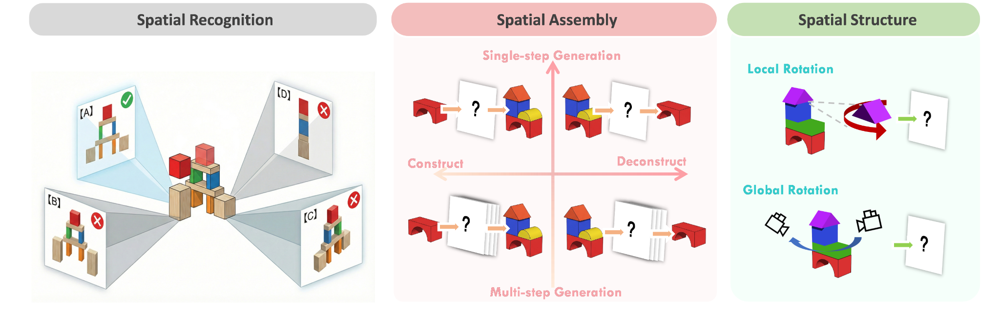
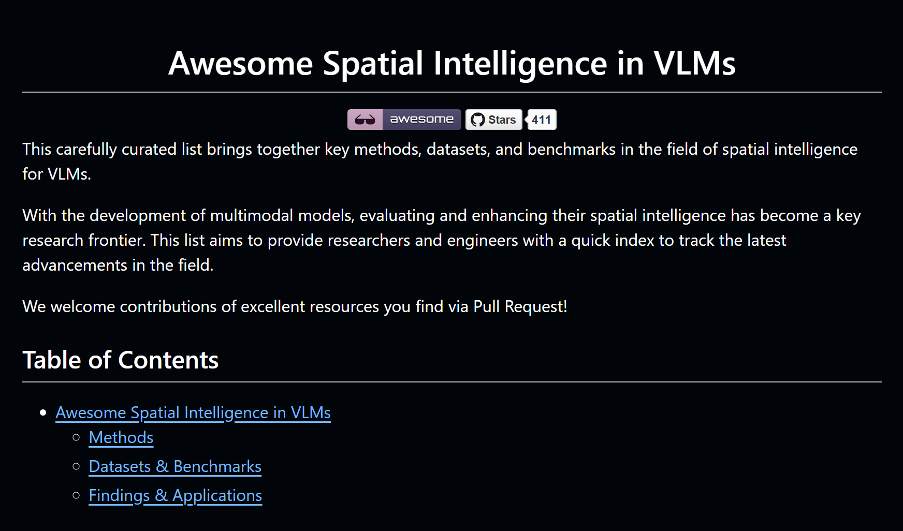

Probing Spatial State studies whether frozen visual foundation models maintain a usable spatial state.
Spatial Intelligence · Embodied AI
Baiqiao Yin
I build agents that can see, imagine, and act in 3D space.
I am an incoming Ph.D. student at Nanyang Technological University, advised by Ziwei Liu. Previously, I was a visiting student at New York University, advised by Saining Xie.
I received my B.Eng. from Sun Yat-sen University, where I worked closely with Xiaodan Liang. I have also been fortunate to collaborate with Fei-Fei Li, Jiajun Wu, Manling Li, Yiming Li, and Chen Feng.

Brooklyn
Singapore
Spatial representation
Active perception
World models
Physical intelligence
Recent updates
News
Selected milestones from my recent research.
Has GPT-6-Astra Achieved Embodied Intelligence? is released with large-scale benchmark and real-robot evaluations.
Thinking in 360° is accepted to CVPR 2026.
MindBlock is published in the official ECCV 2026 proceedings.
MindCube is accepted to ICLR 2026.
MindCube receives the Best Paper Award at the ICCV Workshop on Structural Priors for Vision.
Skeleton2Point is selected for an oral presentation at IROS 2025.
Research agenda
From seeing space
to acting within it.
My research asks how intelligent systems can form stable spatial representations, reason across viewpoints, and turn those representations into reliable actions in the physical world.
Spatial Representation
Learning viewpoint-aware, geometry-sensitive representations that remain useful across tasks and environments.
Closed-loop Intelligence
Building agents that actively seek better viewpoints, learn from interaction, and refine their own spatial beliefs.
Physical Intelligence
Connecting visual understanding with construction, manipulation, and physically grounded decision-making.
Spatial Consistency
Diagnosing whether multimodal models maintain coherent objects, geometry, and state across views and time.
Research portfolio
Research Work
Switch between a focused selection and the complete list. * denotes equal contribution.

Has GPT-6-Astra Achieved Embodied Intelligence?
A large-scale study across 12 embodied benchmarks, harness ablations, and eight real-robot platforms, examining the gap between embodied competence and reliable deployment.

Thinking in 360°: Humanoid Visual Search in the Wild
Introduces humanoid visual search in immersive 360° scenes and H* Bench for active object and path search in visually complex real-world environments.
 New project
New project
Probing Spatial State Representations in Visual Foundation Models
Probes ten frozen visual representations across spatial structure, object persistence, predictive update, and actionability to ask whether today's foundation models maintain a usable spatial state.

MindBlock: Probing Spatial Assembly and Structure in Unified Multimodal Models
True spatial intelligence requires active construction, not only passive 2D question answering. MindBlock exposes perception-execution gaps and evaluates whether generated views form a coherent 3D structure.
 Best Paper · ICCV Workshop
Best Paper · ICCV Workshop
Spatial Mental Modeling from Limited Views
Guiding vision-language models to first construct a cognitive map and then reason over it provides an effective route toward spatial mental modeling from limited observations.

Awesome Spatial Intelligence in VLMs
A living index of methods, datasets, benchmarks, and findings across spatial intelligence research.

Skeleton2Point: Recognizing Skeleton-Based Actions as Point Clouds
Models skeleton joints as point clouds to better capture positional relationships with explicit 3D coordinates.

TheaterGen: Character Management with LLM for Consistent Multi-turn Image Generation
A training-free framework for maintaining characters and context across interactive image-generation turns.

HDBN: A Novel Hybrid Dual-branch Network for Robust Skeleton-based Action Recognition
Combines graph convolution and Transformers to model local structure and global temporal relationships.

LVLM-CL: Make Large Vision-Language Models Work Better Under Continual Learning Settings
A task-specific continual-learning setup for studying instruction-tuned vision-language models.
Path so far
Education & Experience
Research across spatial representation, mental modeling, and embodied intelligence.
Education
Nanyang Technological University
Ph.D. in Computer Science · Advisor: Ziwei Liu
New York University
Visiting Student, Vision-X Lab · Advisor: Saining Xie
Sun Yat-sen University
B.Eng. in Intelligent Science and Technology
Research Experience
NTU S-Lab
Spatial representation learning for embodied intelligence · Mentor: Ziwei Liu
NYU Vision-X Lab
Visual-spatial intelligence and embodied reasoning · Mentor: Saining Xie
NYU AI4CE Lab
Embodied visual search and spatial intelligence · Mentor: Chen Feng
Northwestern MLL Group
Spatial mental modeling and consistency perception · Mentor: Manling Li
Shanghai AI Laboratory
Indoor scene generation for embodied AI · Mentor: Xudong Xu
Peking University (Shenzhen)
Skeleton-based action recognition · Mentor: Mengyuan Liu
Recognition
Honors & Awards
Selected research and competition recognition.
Best Paper Award
ICCV Workshop on Structural Priors for Vision (SP4V)
Grand Challenge Champion
ICME Multi-Modal Video Reasoning and Analyzing Competition
Academic Competition Scholarship
Sun Yat-sen University
3rd Place
IEEE UV Mathematical Modeling for Smart City